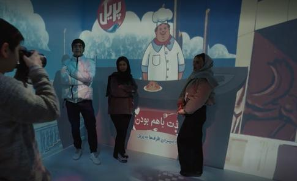
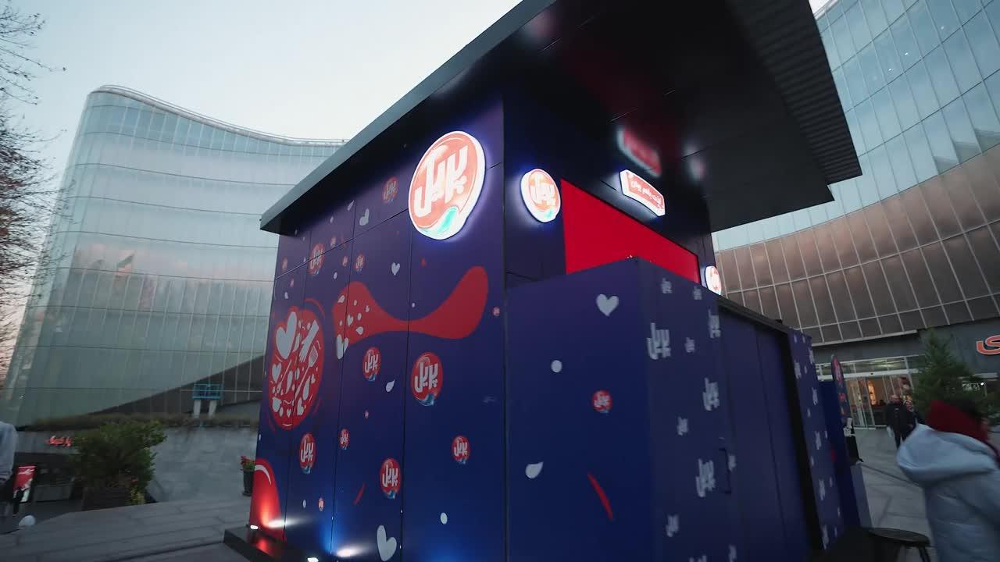

Smart Sampling “Enjoy Together”
Focus: Experiential activation, BTL, consumer engagement
- Supported planning and execution of a gamified smart sampling experience designed to increase engagement beyond traditional product distribution
- Coordinated interactive booth elements and user journey across multiple locations
- Integrated surveys, AR touchpoints, and sampling to enable data collection and post-campaign insights

